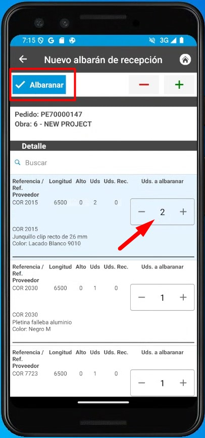
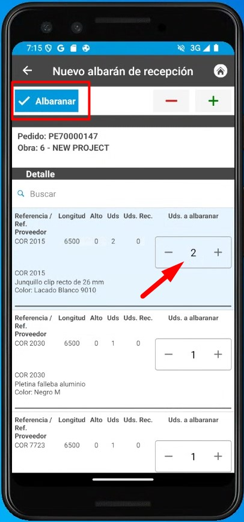
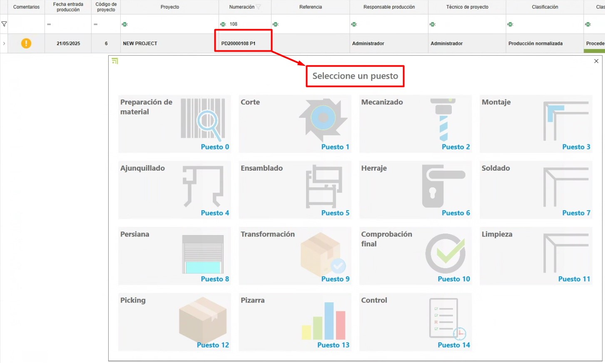
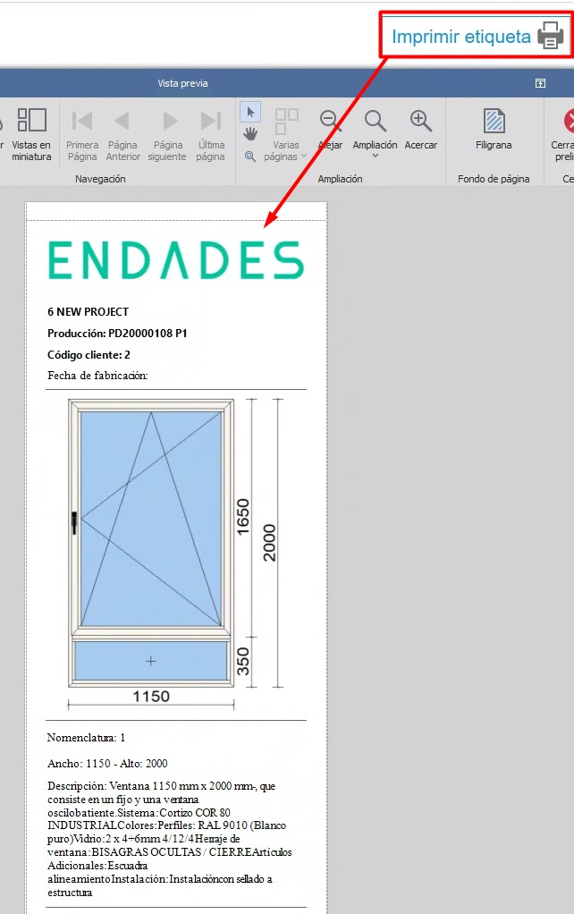

enCONTROL Stock Control System
1. Purpose
This manual is intended for new users of the stock control system used by Endades and their Customers. Its main objective is to provide a step-by-step guide for efficiently managing projects — from creating purchase orders to optimizing production processes in enCONTROL and enSITE. The document covers the key operations and is organized sequentially for easy reference.
2. Receiving materials
2.1 Receiving with enSITE
- Once a purchase order has been created, in ENBLAU go to Warehouses and open "Pending to Receive". A tab will open showing all materials pending receipt for each project.


Note: For more details about purchase orders, see: 2.1. Purchase orders
- Receiving mode: open enSITE from the workshop over Wi‑Fi with the person in charge of receiving the order.
- In Order reception, find the corresponding order (sorted by date).


- Register the receipt by creating a New Delivery Note from the Warehouse section.
 


- In ENBLAU the Pending to receive tab under Warehouses will synchronize and the materials for that order will no longer appear there.
- In Purchase Order you can check traceability.
- In enSITE, indicate the quantities received and the location where they will be stored (Warehouse, Floor, Zone, Subzone…). Afterwards you will be able to view each item’s location.


-
From the enSITE app you can also search by item and see all locations where that item exists, then move or decrement items as needed.


If materials are damaged or there are other incidents, you can attach documents or photos to the delivery note. These can then be reviewed from ENBLAU.


2.2 Receiving in ENBLAU
-
In ENBLAU, once the purchase order is created you can generate a delivery note to record receipt of materials for that order.
-
From the delivery note you can indicate the received quantity for each material. By default, the lines will be marked with the order quantity.
-
Then set the delivery note location in the delivery note’s warehouse tab.
Note: For more detailed information about receiving materials in ENBLAU, see: 4.2. Material reception
3. Production and enCONTROL
3.1 Production
- Create production projects in ENBLAU based on customer orders.
-
Create production.

-
The next step is Send to production.

-
In production you can view items under Stock needed, see which materials have been decremented and decrement items manually if required.


Note: For more information about creating production phases in ENBLAU, see: 3.5. Production
3.2 enCONTROL
-
Open enCONTROL. Production projects will appear. Administrators see all projects; other users see only assigned projects.
-
Open the Control monitor. You can open it by double‑clicking any filter (in the header) or by double‑clicking a project and selecting the Control workstation if it is configured on the workstation.


-
When a project is sent to production (Workshop), it is placed in the production queue on the Production Management tab. The production manager decides priority.

-
To remove an item from "Queued", drag it to the "In production" panel and a Task window will open to propose a date, set status, classification, etc.


-
In the Planning tab you assign projects by dragging them to each responsible person. Select the responsible person and drag the project (you can select multiple responsibles with Ctrl + right‑click). You can also change priority left-to-right and top-to-bottom.

To unassign a project, select the responsible person, select the project and press Ctrl + Delete.
- The Production Calendar displays a Gantt chart based on Logikal times (in the example) showing production start and end dates.

- Optimize processes according to production areas (cutting, machining, assembly, etc.). From the main project view, double‑clicking a project opens a Select Workstation window. Workstations are defined per client and visible per user.

- When entering any workstation the screen shows a Start button:

Timing counts from start until pause or finish.
-
Common fields across screens:
- Comment — You can add a comment and select severity from a dropdown. The last valid comment is the one that unlocks.


- Pause — Pausing work requires selecting a reason from the list. You can then resume by selecting the same workstation again.

- Finish — Finish when the work at that station is complete. You can later resume by starting the same workstation again.

- Documentation — From Documentation you can view production documents exported from Logikal in the document viewer. You can also add a generic path to include catalogs, manuals, etc.

3.2.1 Workstations
1. Material preparation
- Ready — Marks materials with a green check to indicate preparation is complete.
- Not ready — Marks materials with a red X indicating they are not prepared.
-
Material location — If configured in enCONTROL, you can indicate where materials should be located so that decrements only occur from that location.

2. Cutting
-
In Cutting, the length of the bar and the scrap waste are indicated. A scrap window opens, and the length can be adjusted as necessary.


Note: From ENBLAU, go to Configuration - General - Logikal. The Minimum scrap can be set to consider when cutting a bar at the Cutting station.


-
Then, from ENBLAU Warehouse Movements, the total bar output will be reflected (e.g., 6500) and then an input of the same material (e.g., 4100) according to what was specified at the cutting station.

- Also in ENBLAU, in the Stock section, you can see a list filtered by Is scrap of all scraps available in stock.

-
In the Cut section of the enCONTROL cutting station, on the right side of the monitor, the list of cuts performed is shown, and you can print labels for each bar.

3. Machining
-
Does not decrement materials; it is informational and records real time.

4. Assembly
-
Decrements materials (accessories) per unit.

-
In the materials list you can mark items to be assembled at destination. These items will then be added to the Picking workstation list.

5. Sealing / Gasketing (Ajunquillado)
-
Decrements materials (gaskets, wedges, foam, etc.) per unit.

-
In the materials list you can mark items to be assembled at destination; these will be added to the Picking list.

6. Assembly (final)
- Displays product information; materials are not decremented here.

7. Hardware (Herraje)
-
Decrements hardware per sheet.

-
In the materials list you can indicate which hardware will be mounted at destination. Those items will be added to the Picking list.

8. Welding
-
Does not decrement materials; it is informational and records real time.

9. Final inspection
-
Does not decrement materials. Once inspection is complete the product can be stored in the Warehouse and a finished product label can be printed.



-
In ENBLAU under Warehouses → Finished product there are two lists:
Product locations: Shows where each finished product is stored per project and production. From this list you can issue product out, move location, and open the production document by right‑clicking the entry.

Product movements: Shows movements for finished products such as entry, transfer, exit and return. From this list you can perform a return by right‑clicking an exit entry.

10. Transformation
-
At this workstation you can specify a group of materials or a bill of materials to transform into a product (e.g., a railing).

-
As in other workstations, you can mark items to be assembled at destination; those items will be added to the Picking list. You can then print labels and store the product.
11. Cleaning
-
Does not decrement materials; it is informational and records real time.

12. Picking
-
The workstation shows the list of items previously marked in other workstations that will be assembled at destination.

-
You can create packages and assign materials, then print the package label.

- Indicate the picking location for each material.

13. Board (Pizarra)
-
Shows each project’s progress and status.

14. Control
-
Opens the project Control monitor where you can also see the status of each project in production.

Note: Assign priorities and resources to ensure production flows smoothly.
enCONTROL configuration — Configure enCONTROL beforehand. For more information, see: 2. Initial Configuration of enCONTROL
Filter management — Use filters and custom filters to optimize searches in listings. For more information, see: 4. Filter management
4. Stock control and reporting
- Monitor stock needed from the Production section.
- Identify reserved and pending materials in real time.
- Generate inventory reports to assess material usage and plan future purchases.
5. Troubleshooting common issues
- Error importing references: Verify that references are configured in the database.
- Excess or missing materials: Ensure locations and quantities are recorded correctly when receiving materials.
- Warehouse layout problems: Review zone configuration and adjust as needed.
6. Conclusion
This manual provides a step‑by‑step guide for the main processes in the stock control system. By following these instructions, users can manage inventories effectively, improve production, and optimize supplier relationships. For additional support, contact your system administrator.
 Español
Español
 English
English
 Italiano
Italiano
 Português
Português